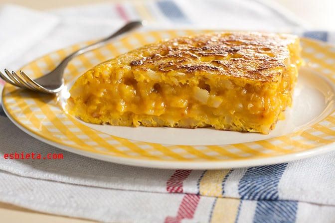

Tortilla de Patatas

Description
Tortilla de patatas is a Spanish omelette made from thinly sliced potatoes and onions,
cooked in olive oil, and bound with a simple egg mixture.
Serve warm or at room temperature for a delicious tapa or appetizer.
Ingredients
- Olive oil
- Eggs
- Potatoes
- Onion
- Salt
Steps
- Add olive oil to a 10 or 12 inch skillet over medium heat. (It’s best to use a skillet that is at least 1 ½ inches deep.)
- Add sliced potato and onion to the pan; they should be mostly covered with olive oil (add a little more oil if needed).
- Season with 1 ½ teaspoon sea salt.
- Cook on medium-high heat, maintaining a gentle boil, for 8-12 minutes, turning occasionally, until potatoes are just fork tender. Don’t overcook them!
- Drain potatoes, reserving oil for later use. Taste and season potatoes with more salt, if needed. Allow them to cool for a few minutes.
- Meanwhile crack the eggs into a bowl and season with about ½ teaspoon of salt. Beat the eggs together and pour over the cooked potatoes and onion and toss to coat.
- Add a little bit of oil to the bottom of a 10-inch non-stick skillet over high heat. Once hot, pour potato mixture into it and cook on high heat for 1 minute. Reduce heat to medium-low and cook for about 5 minutes.